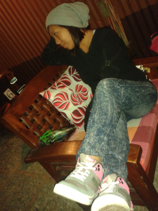

For those who don’t know me, I’m Quakelyn Canutab Lisayen, born three weeks earlier on July 21, 1990 due to the 1990 Killer earthquake that struck Northern Luzon. Well I studied primary school at Philex Mines, Padcal, Tuba, Benguet and transferred at Baguio City National High School for secondary school. I’ve been choosing between University of Baguio or Baguio College of Technology for tertiary but I don’t want a crowded place so I chose the second one. There, I did not take college seriously so I ended up at 3rd Year in BS – Information Technology. (I will still study if given a chance LOL).
10 Things I Love To Do
- eat
- sleep
- sing
- dance
- read(wattpad)
- browse in all my social media accounts
- play with the dogs
- meet my friends
- watch
- chat with my mom
10 Things I Hate About Myself
- super moody as in I easily get mad
- matampuhin
- pimples
- illness
- snoring (LOL)
- opened mouth while sleeping (LMAO)
- height!
- overweight (my bones are heavy; IGOROT eh)
- kuripot
- when depression strikes
Wishlist
- Ma-kidney transplant na ASAP(in God's time)
- Hike again with friends
- Go to beach
- Go to EK this Christmas with my siblings
- Go to Palawan with my love(ASA)
- Go to South Korea and visit my mon and relatives there
- To have a job that I will love to do
- Picnic with friends
- To live a peaceful and happy life
- Get married before 30 years old(%more to go)
What People Thinks About Me
- Ill-tempered
- Loner
- Can't talk to
- Snob
- Feeling(in all aspects LOL)
- Bossy at work(way back)
- Happy go lucky
- Maldita
- Rich(sana LOL)
- Bitchy and naughty(di naman po,friendly lang)
Favorite Food
- Palabok
- Fried chicken(not breaded)
- Shawarma
- Siomai
- Chicken mami
Favorite Song
- No Ordinary Love
- For All of My Life
- Bring me to Life(Evanescene)
- Fallen Angel(Three Days Grace)
- The Closer I Get To You(MYMP)
- God Gave Me You
- Love Yourself
- Because I Miss You(Jung Yong Hwa)
- Blessings
I usually love being alone when I have lots in my mind. I cry it out alone when depression strikes. I don’t wanna be seen weak coz its not me. I smile and talk a lot in front of others and my friends but i cant actually tell them what i really feel. That at times, im tired but i still need to stand and fight. When im pissed, i text or pm my bestfriends and close friends to send me a joke and it always works. But what if none of them replies?
Well those are some things about me, so if you don’t know me yet. Don’t judge or assume. Just talk to me and maybe we can be friends. 😎😎😎